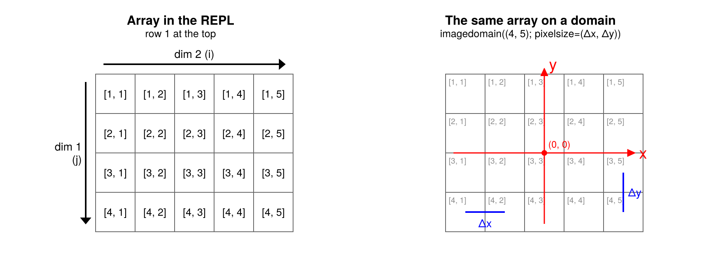
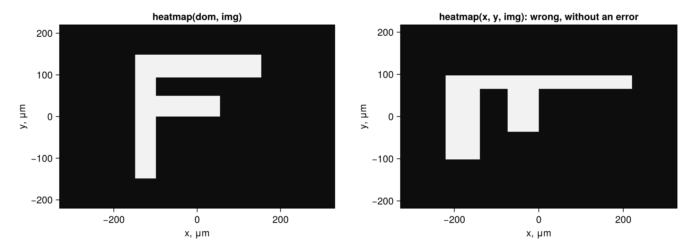
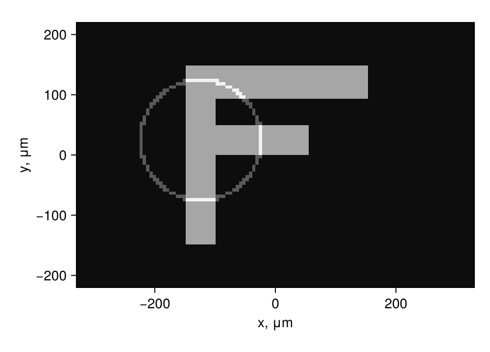
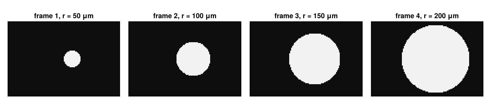

using SampledDomains
using CairoMakie
using FileIO, ImageIO, ColorTypes
CairoMakie.activate!(; type="png")Images and axes
An array has no axes of its own, only the directions of its indices. SampledDomains attaches the physical axes x and y to these directions, by default as an image viewer shows a picture. This page shows the convention and checks it on an image read from a file.
An array and its axes
nrows, ncols = 4, 5
mid = Point2f(ncols / 2, nrows / 2) # centre of the array; cell [j, i] is the unit square at (i, j)
function draw_array!(ax; small=false)
for j in 1:nrows, i in 1:ncols
poly!(ax, Rect2f(i - 1, j - 1, 1, 1); color=:white, strokecolor=:gray40, strokewidth=1)
end
for j in 1:nrows, i in 1:ncols
if small
text!(ax, Point2f(i - 1 + 0.08, j - 1 + 0.08); text="[$j, $i]", align=(:left, :top),
fontsize=10, color=:gray55)
else
text!(ax, Point2f(i - 0.5, j - 0.5); text="[$j, $i]", align=(:center, :center),
fontsize=13)
end
end
end
function array_axis(pos, title, subtitle)
ax = Axis(pos; title, subtitle, aspect=DataAspect(), yreversed=true, titlesize=16,
subtitlesize=13, limits=(-1.3, ncols + 0.6, -0.8, nrows + 0.6))
hidedecorations!(ax)
hidespines!(ax)
return ax
end
fig = Figure(; size=(900, 340))
ax1 = array_axis(fig[1, 1], "Array in the REPL", "row 1 at the top")
draw_array!(ax1)
arrows2d!(ax1, [Point2f(-0.25, 0.2)], [Vec2f(0, nrows - 0.4)]; color=:black, shaftwidth=2)
text!(ax1, -0.35, nrows / 2; text="dim 1\n(j)", align=(:right, :center), fontsize=14)
arrows2d!(ax1, [Point2f(0.2, -0.25)], [Vec2f(ncols - 0.4, 0)]; color=:black, shaftwidth=2)
text!(ax1, ncols / 2, -0.35; text="dim 2 (i)", align=(:center, :bottom), fontsize=14)
ax2 = array_axis(fig[1, 2], "The same array on a domain", "imagedomain((4, 5); pixelsize=(Δx, Δy))")
draw_array!(ax2; small=true)
red = (; color=:red, shaftwidth=1.5, tipwidth=10, tiplength=10)
arrows2d!(ax2, [mid .- Point2f(2.3, 0)], [Vec2f(4.6, 0)]; red...) # x to the right
arrows2d!(ax2, [mid .+ Point2f(0, 1.8)], [Vec2f(0, -3.95)]; red...) # y up (rows down)
text!(ax2, mid .+ Point2f(2.4, 0); text="x", color=:red, align=(:left, :center), fontsize=20)
text!(ax2, mid .+ Point2f(0.12, -2.25); text="y", color=:red, align=(:left, :center), fontsize=20)
scatter!(ax2, [mid]; color=:red, markersize=10)
text!(ax2, mid .+ Point2f(0.1, -0.08); text="(0, 0)", color=:red, align=(:left, :bottom), fontsize=12)
# the steps: centres of two neighbouring pixels in x and in y
c(j, i) = Point2f(i - 0.5, j - 0.5)
bracket = (; color=:blue, linewidth=2)
lines!(ax2, [c(4, 1), c(4, 2)]; bracket...)
text!(ax2, (c(4, 1) .+ c(4, 2)) ./ 2 .+ Point2f(0, 0.12); text="Δx", color=:blue,
align=(:center, :top), fontsize=14)
lines!(ax2, [c(3, 5), c(4, 5)]; bracket...)
text!(ax2, (c(3, 5) .+ c(4, 5)) ./ 2 .+ Point2f(0.12, 0); text="Δy", color=:blue,
align=(:left, :center), fontsize=14)
fig
- Left: how the REPL prints a 4 × 5 array, and how an image viewer shows an image file: the row index
j(dim 1) grows downward, the column indexi(dim 2) to the right. - Right: the same array on a domain made by
imagedomain:xgrows to the right withi,ygrows up, againstj, so row 1 is the top. The origin is here at the centre (the default);ΔxandΔyare the distances between the centres of neighbouring pixels.
The arrays keep the index order of images, a[j, i], and dom[j, i] is the point of a[j, i].
An image from a file
The test object is the letter F: it looks different after every flip, rotation or transposition. We draw it as a person would in an image editor, in pixel rows and columns with row 1 at the top, and save it as a PNG file. Nothing of SampledDomains is used here.
picture = zeros(80, 120)
picture[14:67, 34:42] .= 1 # stem: rows 14 to 67 (from the top), columns 34 to 42
picture[14:23, 34:88] .= 1 # top bar, at the top of the stem
picture[32:40, 34:70] .= 1 # middle bar
file = joinpath(mktempdir(), "letterF.png")
save(file, Gray.(picture))A client sends this file. It is imported with the standard tools, and is an array of 80 rows and 120 columns:
img = Float64.(load(file))
size(img)(80, 120)The REPL prints it as the picture looks, upright (every eighth pixel):
Int.(img[1:8:end, 1:8:end])10×15 Matrix{Int64}:
0 0 0 0 0 0 0 0 0 0 0 0 0 0 0
0 0 0 0 0 0 0 0 0 0 0 0 0 0 0
0 0 0 0 0 1 1 1 1 1 1 0 0 0 0
0 0 0 0 0 1 0 0 0 0 0 0 0 0 0
0 0 0 0 0 1 1 1 1 0 0 0 0 0 0
0 0 0 0 0 1 0 0 0 0 0 0 0 0 0
0 0 0 0 0 1 0 0 0 0 0 0 0 0 0
0 0 0 0 0 1 0 0 0 0 0 0 0 0 0
0 0 0 0 0 1 0 0 0 0 0 0 0 0 0
0 0 0 0 0 0 0 0 0 0 0 0 0 0 0Its domain
The camera has pixels of 5.5 μm. The domain of the image, with the origin at its centre:
dom = imagedomain(img; pixelsize=5.5, units=:um)80×120 CartesianDomain2D{Float64} with points (x, y):
x: -327.25:5.5:327.25
y: 217.25:-5.5:-217.25
units=μmThe upper left pixel has negative x and positive y; the top bar of the F (row 14) lies at positive y, the bottom of the stem (row 67) at negative y:
dom[1, 1]2-element StaticArraysCore.SVector{2, Float64} with indices SOneTo(2):
-327.25
217.25dom[14, 34].y, dom[67, 34].y(145.75, -145.75)@assert dom[14, 34].y > 0 > dom[67, 34].y # a check: the build fails if this is wrongPlots
With Makie loaded, a domain and an array on it can be passed to heatmap, image, contour, contourf and surface: the array is drawn with the axes of the domain, and axislabels gives the labels with the units.
fig = Figure(; size=(1000, 360))
ax1 = Axis(fig[1, 1]; title="heatmap(dom, img)", aspect=DataAspect(), axislabels(dom)...)
heatmap!(ax1, dom, img; colormap=:grays)
ax2 = Axis(fig[1, 2]; title="heatmap(x, y, img): wrong, without an error",
aspect=DataAspect(), axislabels(dom)...)
heatmap!(ax2, dom.xrange, dom.yrange, img; colormap=:grays)
fig
The left picture is the image as the client sees it, with axes in μm. The right one shows a trap: Makie takes the first index of an array as the horizontal one, while for images it is the row. Given the ranges of the domain and the untransposed image, Makie stretches the array over the axes and draws a meaningless picture, without an error or a warning. Plot through the domain, or transpose: heatmap(dom.xrange, dom.yrange, permutedims(img)).
A function on the domain
A function of (x, y) evaluated on the domain gives the array that a camera would record. The half plane y > 0 is the upper half of the image:
upper = map(p -> p.y > 0, dom)
@assert upper == [j <= 40 for j in 1:80, i in 1:120]and a circle of radius 100 μm around the junction of the stem and the middle bar:
centre = dom[36, 38]
circle = map(p -> abs(hypot(p.x - centre.x, p.y - centre.y) - 100) <= 3, dom)
fig = Figure(; size=(500, 360))
ax = Axis(fig[1, 1]; aspect=DataAspect(), axislabels(dom)...)
heatmap!(ax, dom, img .+ 0.5circle; colormap=:grays)
fig
Stacks of images
For more than two dimensions the spatial axes come first, in the order (y, x), and the others follow, as in JuliaImages. The domain describes the first two axes, and every slice is an array on it. Here are four frames of a growing disc:
radii = [50, 100, 150, 200]
stack = zeros(size(dom)..., length(radii))
for (frame, r) in zip(eachslice(stack; dims=3), radii)
frame .= map(p -> hypot(p.x - 50, p.y) <= r, dom)
end
size(stack)(80, 120, 4)fig = Figure(; size=(1000, 220))
for (k, frame) in enumerate(eachslice(stack; dims=3))
ax = Axis(fig[1, k]; title="frame $k, r = $(radii[k]) μm", aspect=DataAspect())
heatmap!(ax, dom, frame; colormap=:grays)
hidedecorations!(ax)
end
fig
This page was generated using Literate.jl.